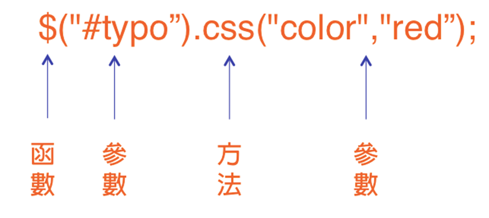

基本語法
在開始jQuery之前，我希望大家先對HTML、CSS有一些基本的認識
- HTML檔
- CSS檔
HTML是用來做主要的網頁結構，HTML內的資料可再利用javascript來做處理， 例如：修改標籤內容，添加視覺效果，故待會的範例幾乎都會是針對HTML內的標籤做動作
資料儲存的方式是一種叫做DOM tree的方式，Document Object Model tree，因為是tree的結構， 在搜尋標籤(物件)的時候要注意好parents , childs , 甚至是同儕間的位置關係，才能做出正確的選擇，以下為tree的範例
CSS可以用來定義單一標籤，或定義一個class讓很多標籤使用，可以設定寬度、高度、圖片、背景......等， 就像一份畫好的設計圖，可讓HTML引用
CSS語法可以寫在HTML裡面，或者是創立一個.css檔案來儲存，管理與引用上較為方便，一個HTML可同時引用多個.css檔
先前有提到，jQuery僅僅是一套函式庫，那我們要怎麼使用jQuery呢？ 假設我現在有一份寫好的jQuery code存在jquery-2.2.3.js中 或者我要從網路上存取別人寫好存在.js檔中的code 那麼我只要在HTML裡面加上下面這段代碼即可 就像是C、C++中的 #include

jQuery主要是以方便、簡單為主，故大部分.js code都是一份一份寫好的function 而又幾乎是用來對HTML做增修，所以code的使用大致上都會像下面這個格式
你可能會在一些地方看到 jQuery("#typo")開頭的code，不用覺得困惑， "jQuery"字串與"$"符號在jQuery的語法中是完全相等的，如果你在code的撰寫上有非常充裕的時間又十分熱愛jQuery的話， 不妨捨棄簡易的"$"符號，通通使用"jQuery"字串吧
接下來#typo是什麼呢？這是一個在HTML中搜尋到的某一個標籤， 是準備被jQuery function做增修的標籤，以下的範例會讓你們更加理解
這是一段HTML code ， 和一些搜尋標籤的方式與結果
$("#typo").css("color","red");
其中css就是要呼叫的function，而function的括號內即為需要被增修的屬性或數值，以下列出幾個簡單的jQuery function
| function | 功能 |
|---|---|
| html | 判斷標籤是否為空 |
| replaceWith | 取代整個標籤 |
| setTimeout | 取得時間訊號並執行動作 |
| clone | 複製標籤內容 |
| size | 計算有幾個標籤 |
| append | 在標籤內容後面加上字串 |
| slidedown | 將物件可愛的滑下來(飛入) |
| mouseover | 滑鼠移入此標籤 |
| mouseout | 滑鼠移出此標籤 |
| mousedown | 滑鼠在此標籤上按下 |
| mouseup | 滑鼠在此標籤上釋放 |
| click | 滑鼠在標籤上點擊 |
| dbclick | 滑鼠在標籤上雙擊 |
| keydown | 在標籤被選取時按下鍵盤 |
最後我們將提到，如何自己寫出一個jQuery function？
定義：
$.fn.myFunctionName =
function(){
…
//要做的事情
…
}
呼叫：
$(“標籤”).myFunctionName();
在myFunctionName中打上自己定義的function name以及在兩個大括號之間打下這個funciton要做的事情即可， 呼叫時和一般function一樣，在dot後面打上function name即可 以下是一個定義及呼叫的例子，這個例子是將id="Nextpage"的標籤設定在整個視窗的正中央 (註：$==jQuery)